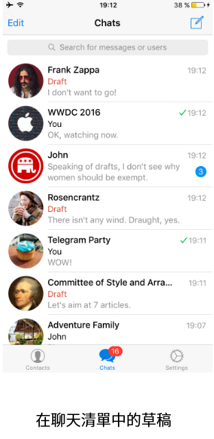
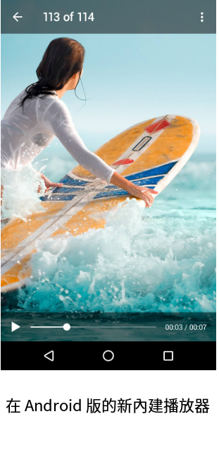
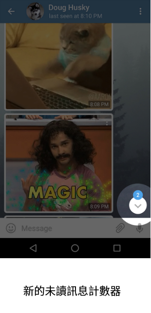

首頁 >
官方新聞 > 草稿、浮動小視窗，及更多（原文）
對於許多我們的用戶而言，Telegram 已經取代用於商務溝通的電子郵件。但是，在通訊軟體中，很多人都在爭奪您的注意力。有時，他們會打斷您輸入到一半的重要訊息，然後您忘了這一切。 好消息！隨著我們最新的更新，這已經不再是一個問題。
今天，我們引進了草稿(Drafts)的功能。未完成的訊息立刻在聊天室清單中清晰可見，並且含有未傳送草稿的聊天室會移動到清單的頂端。更重要的是 - 所有草稿立刻跨裝置同步。現在，您可以在您的手機上開始輸入，然後繼續在電腦上完成。

浮動小視窗 (Picture-in-Picture)
在iOS上，YouTube 和 Vimeo 影片在右下角獲得一個新的按鈕。點擊它，縮小影片並繼續觀看，同時完成其他任務。(譯者：這功能似乎還有問題，我在 YouTube 沒測試成功，但一般影片檔則測試 ok ！)
您可以延著螢幕拖動最小化的影片播放視窗，以便它不會礙事。在iPad上，浮動小視窗模式的影片將跟在身邊，即使您切換到不同的應用程式。這個功能現在已經可用於 Telegram 中所有影片。
Android 版 Telegram 內建影片播放器
Android 用戶將會喜歡新的內建影片播放器，可用於Android4.1+。

…和更多
除此之外，電報v.3.10允許您查看整集的群組照片，而不只有最新的一個而已。帶有未讀訊息計數器的 "滾動到底" 按鈕，也已引進 Android 版和 Telegram Desktop 中了。

我們已改良我們所有應用程式的設計。Telegram Desktop 現在也有漂亮的藍色未讀訊息計數器、新的按鈕，和全面改版的個人、群組、頻道簡介的資料頁。
對於 Telegram，我們努力擴張通訊應用程式您可以用它來做什麼的界限。敬請期待更多更新即將推出！
2016年6月14日
電報團隊